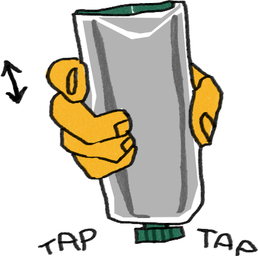
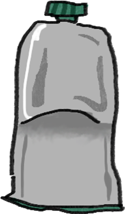
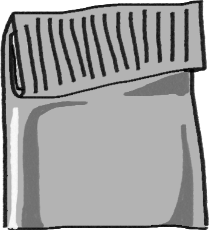

Storing Paint
- The threads on the neck of the tube should free of color
- The lid is screwed on tightly
- The tubes are stored at ambient/ cool temperature.
- Paints are kept out of the sun and in a dry environment
>



Storing paint in tubes (Oil Paint, Gouache, & Watercolor*):
Using a pallet knife, scoop paint into the tube
Tap the paint tube onto a flat surface to settle the paint
Leave about 15mm of the tube empty at the end
Flatten the end with a ruler and crimp it with a set of priers or a paint wringer if you have one available (both work)
Bend over the end three times in sections of 3mm, crimping it and flattening it each time.
*Keep watercolors hydrated in tube
>
Storing Paints in Watercolor pans (Watercolor & Gouache*)
Make sure paint is well mixed before filling pans (ingredients aren’t separating)
Fill pan half-way of the way (starting from the corner) and let dry in a well aired place (like a windowsill)
Fill pan almost to the top and let dry
Fill pan all the way, let dry
+ If you want, before the final layer dries, you can create a little depression with your finger to hold water
* Add glycerin or honey to make it easier to and prevent cracking/crumbling
* Watercolors tend to shrink when dry